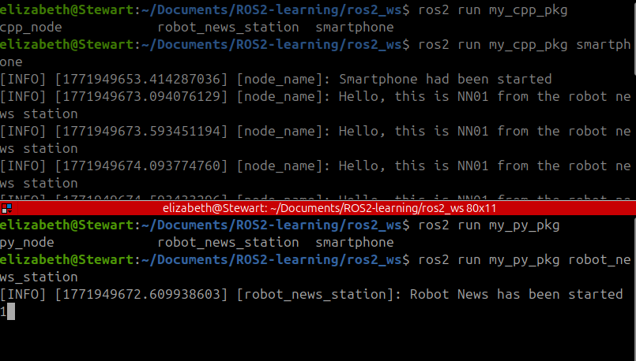

publisher
更多查看： ./入门基础和介绍/节点和数据流
用python创建publisher
创建文件
- 工作目录
ros2_ws/src/my_py_pkg- 创建节点
touch +x robot_news_station.py- 赋予执行权限
chmod +x robot_news_station.py- chmod: Change Mode（改变模式）。
- +x: 增加 eXecutable（可执行）权限。
- 进入src区进行编码
cd ../..code .
编写节点
节点代码
robot_news_station.py
- ```python #!/usr/bin/env python3 # 告诉系统这是一个 Python 脚本 import rclpy # ROS 2 的 Python 客户端库（核心库） from rclpy.node import Node # 导入节点类，所有的功能都要写在“节点”里 from example_interfaces.msg import String # 导入消息类型，我们要发的是“字符串”
class RobotNewsStationNode(Node): def init(self): # 初始化节点，并给它取名叫 "robot_news_station" super().init("robot_news_station")
# 创建一个“发布者”（电台发射塔）
self.publisher_ = self.create_publisher(
String, # 规定发送的消息类型是 String（文字）
"robot_news", # 规定频道名称（Topic）叫 "robot_news"
10 # 队列大小：如果发得太快，最多缓存10条消息
)
# 创建一个定时器：每 0.5 秒执行一次 self.publish_news 这个函数
self.timer_ = self.create_timer(0.5, self.publish_news)
# 在终端打印一条日志，告诉我们程序跑起来了
self.get_logger().info("Robot News has been started")
def publish_news(self):
# 这里的逻辑是定时器触发后要做的事
msg = String() # 创建一个空白的 String 消息对象
msg.data = "Hello" # 给消息填入内容 "Hello"
self.publisher_.publish(msg) # 真正把消息发送出去
def main(args=None): rclpy.init(args=args) # 1. 初始化 ROS 2 通信系统 node = RobotNewsStationNode() # 2. 实例化我们上面写的那个类 rclpy.spin(node) # 3. 让程序进入“死循环”，等待定时器触发或处理事件,如果没有 spin，程序运行完 init 就会直接退出，定时器永远不会触发。 rclpy.shutdown() # 4. 当我们手动关闭程序时，清理资源
if name == "main()": main() ```
-
self.publisher_ = self.create_publisher(msg_type, topic_name, qos_profile) -
publisher需要的第一个参数：消息类型
-
消息类型
-
可以使用标准的，也可以使用自己设计的类型
- string类型的消息
```bash username:~/ros2_ws/src$ ros2 interface show example_interfaces/msg/String # This is an example message of using a primitive datatype, string. # If you want to test with this that's fine, but if you are deploying # it into a system you should create a semantically meaningful message type. # If you want to embed it in another message, use the primitive data type instead. string data
```
-
import消息类型
-
from example_interfaces.msg import String -
package.xml文件增加dependencies
<depend>example_interfaces</depend>
-
[!note]
> 好习惯： 在import一个新的库的时候，确保在pkg文件下的package.xml 文件中添加新的<depend> </depend>
-
-
publisher需要的第二个参数：话题名称
- 命名规范：小写 + 下划线， 层级结构可以加/
- publisher需要的第三个参数：队列深度。
- 通常简单传一个整数，比如10
- 代表暂存消息的大小
- 工作逻辑
- 假设你设置
queue_size = 10：- 先进先出 (FIFO)： 就像排队买票，最先发出的消息会被最先处理。
- 挤出旧消息： 如果队列里已经存满了 10 条消息，而第 11 条新消息又来了，系统会自动删掉最老的那条 (第 1 条)，腾出位置给最新的。
- 如果网络糟糕，或者消息很大，可以设置大一点
一些代码conventions
- OOP 封装：强制使用 类 (Class) 继承
Node，而不是写面向过程的脚本。 - 回调机制 (Callback-driven)：逻辑应由事件（定时器、消息到达）触发，而不是在
while True循环里死等。 - 分离入口点：
main函数仅负责生命周期管理（初始化、启动、销毁），业务逻辑全在类内部。 - 理由：为了解耦。这使得你的节点既可以作为一个独立脚本运行，也可以被其他更高级的程序（如 ROS 2 Launch 启动文件）直接调用。
- 成员变量后缀 (
_)：类内部的长期对象（如self.publisher_）末尾加下划线，区分局部变量。 - 日志规范：严禁
print()，统一使用self.get_logger().info()。这便于在分布式系统中过滤和远程调试。 - 理由：机器人通常在后台运行或部署在远程机器上。
print只能在当前屏幕看，而logger可以远程抓取、存入数据库，并根据严重程度（如 ERROR）触发紧急制动。 -
话题命名：Topic 名称（如
robot_news）通常使用全小写加下划线（snake_case） -
QoS 默认值：队列长度通常设为
10，这是一个在实时性和可靠性之间的折中惯例。 - Spin 阻塞：必须调用
rclpy.spin()，否则节点就像一个“没有电源的收音机”，虽然在那儿但不会工作。 - 消息实例化：遵循“创建对象 -> 填充数据 -> 发布”的标准三步走，保持代码的可读性。
package.xml
-
package.xml文件增加dependencies
-
<depend>example_interfaces</depend>
[!note]
好习惯： 在import一个新的库的时候，确保在pkg文件下的package.xml 文件中添加新的
setup.py
- ```python entry_points={ 'console_scripts': [ "py_node = my_py_pkg.my_first_node:main", "robot_news_station = my_py_pkg.robot_news_station:main", ],
}, ```
-
entry_points
-
entry_points是 ROS 2 的“节点注册表” -
ROS 2 节点依赖很多复杂的库和环境变量。
- 作用：通过
entry_points启动时，系统会自动帮你配置好PYTHONPATH。这避免了你直接运行脚本时经常遇到的ImportError: No module named 'rclpy'报错。
- 作用：通过
-
填写规则
-
robot_news_station(等号左边)：这是可执行文件名。你以后在终端输入ros2 run 包名 robot_news_station就能启动程序。 my_package.robot_news_station(等号右边前半部分)：这是路径。告诉系统去my_package文件夹下找robot_news_station.py文件。:main(冒号后面)：这是入口函数。告诉系统运行该文件里的main()函数。
colcon build
-
作用
-
动作 简练说明 为什么需要 依赖校验 检查 package.xml中的库是否齐全。防止程序运行到一半因缺少库（如 rclpy）而崩溃。命令注册 把 setup.py里的入口转换成系统命令。让你可以通过 ros2 run直接启动，而不必输入长长的文件路径。空间隔离 将代码从 src（开发区）同步到install（运行区）。保持源代码干净，确保运行环境是经过“打包”后的稳定版本。 格式编译 将 .msg消息或 C++ 源码转换成二进制。提高运行速度，并让不同语言（Python/C++）能听懂彼此说话。 -
文件目录： 在主目录下
-
rm -r build/ install log/:当你搞乱了，就这么做 -
colcon build --packages-select my_py_pkg --symlink-install -
colcon build- 启动编译工作流（检查依赖、注册命令、搬运文件）
- 如果只输入这个，它会尝试编译
src文件夹下所有的包，非常耗时
--packages-select my_py_pkg- 只编译
my_py_pkg这一个包，其他的包不要管
- 只编译
--symlink-install- 在
install目录里创建一个指向src源码文件的快捷方式，而不是把文件物理复制过去 - 不需要重新编译，下次运行程序时它会自动读取最新的代码
- 在
命名注意事项
- node名字：文件名（.py）, 节点类名（MyNode), setup.py文件的entry名字，一般都设置一样的
- topic名字： 是在create_publisher()里面命名的
用C++创建publisher
创建文件
- 目录：
ros2_ws/src/my_cpp_pkg/src - 创建文件：
touch robot_news_station.cpp - vscode目录：
ros2_ws/src
编写节点
节点代码
#include "rclcpp/rclcpp.hpp"
#include "example_interfaces/msg/string.hpp"
using namespace std::chrono_literals;
class RobotNewsStationNode : public rclcpp::Node
{
public:
// 构造函数：初始化节点名和变量
RobotNewsStationNode() : Node("robot_news_station"), robot_name_("R2D2")
{
// 创建发布者
publisher_ = this->create_publisher<example_interfaces::msg::String>("robot_news", 10);
// 创建定时器：0.5s 执行一次 publishNews
timer_ = this->create_wall_timer(500ms, std::bind(&RobotNewsStationNode::publishNews, this));
// 注意：get_logger 是方法，后面要加 ()
RCLCPP_INFO(this->get_logger(), "Robot news station has been started");
}
private:
void publishNews()
{
auto msg = example_interfaces::msg::String();
msg.data = std::string("Hi, this is ") + robot_name_ + " from robot news station";
publisher_->publish(msg);
}
std::string robot_name_;
// 这里的 SharedPtr 就像 Python 的变量引用
rclcpp::Publisher<example_interfaces::msg::String>::SharedPtr publisher_;
rclcpp::TimerBase::SharedPtr timer_;
};
int main(int argc, char **argv)
{
rclcpp::init(argc, argv);
// 使用智能指针创建节点实例
auto node = std::make_shared<RobotNewsStationNode>();
rclcpp::spin(node);
rclcpp::shutdown();
return 0;
}
c++代码和python代码的对比和区别
| 维度 | Python (rclpy) | C++ (rclcpp) | C++ 核心逻辑拆解 |
|---|---|---|---|
| 文件头 | import rclpy |
#include "rclcpp/rclcpp.hpp" |
C++ 需要“包含”头文件，类似导入模块 |
| 命名空间 | msg = String() |
auto msg = std::make_shared<...String>() |
C++ 用 :: 表示层级，Python 用 . |
| 类定义 | class MyNode(Node): |
class MyNode : public rclcpp::Node |
C++ 使用 : 表示继承，public 表示公开 |
| 构造函数 | def __init__(self): |
MyNode() : Node("node_name") |
C++ 冒号后接的是初始化列表，直接传参给父类 |
| 私有变量 | self._name = "R2" |
std::string name_ = "R2"; |
C++ 习惯在变量末尾加下划线 _ 表示私有 |
| 创建 Publisher | self.create_publisher(Type, 'topic', 10) |
this->create_publisher<Type>("topic", 10) |
<Type> 是模板，编译时就确定传输的数据类型 |
| 回调绑定 | self.timer_callback |
std::bind(&MyNode::cb, this) |
std::bind 把函数名和对象实例 this 捆绑在一起 |
| 日志打印 | self.get_logger().info("...") |
RCLCPP_INFO(this->get_logger(), "...") |
C++ 里的 RCLCPP_INFO 是个宏，处理效率更高 |
| 消息发布 | pub.publish(msg) |
pub_->publish(msg) |
-> 符号意味着 pub_ 是个指针（引用） |
| 参数声明 | self.declare_parameter('p', 1) |
this->declare_parameter("p", 1); |
两者逻辑一致，但 C++ 语句末尾必须带 ; |
| 循环等待 | rclpy.spin(node) |
rclcpp::spin(node); |
基本一致 |
| 数据类型 | 动态（随便改） | 静态（必须提前声明） | C++ 里的 auto 可以让编译器帮你猜类型 |
package.xml
- 添加
<depend>example_interfaces</depend>
CMakeList.txt
-
添加
-
```cmake # find dependencies find_package(example_interfaces REQUIRED)
add_executable(robot_news_station src/robot_news_station.cpp) ament_target_dependencies(robot_news_station rclcpp example_interfaces)
install(TARGETS cpp_node # exetable robot_news_station DESTINATION lib/${PROJECT_NAME} ) ```
package和CMakeList的区别
-
特性 package.xml CMakeLists.txt 主要角色 包管理器（rosdep, colcon）的指南 编译器（CMake）的脚本 关注点 项目属性（名称、版本、作者、外部依赖库名） 编译流程（可执行文件、头文件路径、库链接） 依赖声明 声明软件包名称（如 example_interfaces）声明具体的库文件/头文件 典型语法 <depend>,<build_depend>find_package(),add_executable()重要性 决定了你的包能否被系统识别和安装 决定了你的代码能否编译成功
colcon build
- 命令行目录：
ros2_ws colcon build --packages-select my_cpp_pkgsource install/setup.bashros2 run my_cpp_pkg robot_news_stationros2 node listros2 node info /robot_news_stationros2 topic echo /robot_news
subscriber
用python创建subscriber
创建文件
- 文件目录
ros_ws/src/my_py_pkg/my_py_pkg/- 创建空白py文件
touch smartphone.pychmod +x smartphone.py
编写代码
#!/usr/bin/env python3
import rclpy
from rclpy.node import Node
from example_interfaces.msg import String
class SmartphoneNode(Node):
def __init__(self):
super().__init__("smartphone")
self.subsriber_ = self.create_subscription(
String, #消息类型，必须和publisher发送的消息类型一致
"robot_news",#主题名称，必须和对应publisher的主题名字一致
self.callback_robot_news, #回调函数，收到信息后做的事
10 #队列大小
)
self.get_logger().info("Smartphone has been started")#初始化提示
def callback_robot_news(self, msg:String):# explicit type
#callback_topicname
self.get_logger().info(msg.data)
def main(args=None):
rclpy.init(args=args)
node = SmartphoneNode()
rclpy.spin(node)
rclpy.shutdown()
if __name__ == "__main__":
main
- 注意：setup.py 和package.xml文件和publisher一致
用CPP创建subcriber
创建文件
- 创建目录
~/ros2_ws/src/my_cpp_pkg/srctouch ./smartphone.cpp- 编码工作区
~/ros2_ws/src
编写代码
节点代码
- ```c++ #include "rclcpp/rclcpp.hpp" #include "example_interfaces/msg/string.hpp"
class SmartphoneNode : public rclcpp::Node
{
public:
SmartphoneNode():Node("node_name")
{
subscriber_ = this->create_subscription
}
private: //callback func void callbackRobotNews(const example_interfaces::msg::String::SharedPtr msg) { RCLCPP_INFO(this->get_logger(),"%s", msg->data.c_str()); }
rclcpp::Subscription<example_interfaces::msg::String>::SharedPtr subscriber_;
};
int main(int argc, char **argv)
{
rclcpp::init(argc, argv);
auto node = std::make_shared
-
一些容易出错的点提示
-
example_interfaces: 注意是s结尾 - 回调函数的绑定 (
std::bind)注意不要漏掉this指针或占位符_1 RCLCPP_INFO(..., "%s", msg->data.c_str())- 是
RCLCPP_INFO, 不是rclcpp_info, 也不是`RCLCPP.INFO .c_str():msg->data是std::string类型，而 C 语言风格的格式化打印%s需要的是const char*。所以必须调用 `.c_str()
- 是
std::make_shared\<SmartphoneNode\>()- 注意尖括号
< >里面是类型名，不需要圆括号 - 否则触发编译错误（如
sizeof失败）
- 注意尖括号
CMakeList.txt
Cmake三部曲
find_package() : #include库的时候用
添加目标信息
add_executable(node_name src/srcfile.cpp)
ament_target_dependencies (node_name dependencies_name1 dependencies_name2 dependencies_name3 ...)添加install信息
cmake install(TARGETS node_name DESTINATION lib/${PROJECT_NAME} )
- 配置文件
cmake_minimum_required(VERSION 3.8)
project(my_cpp_pkg)
# 1. 寻找编译器标志 (如果是 C++)
if(NOT CMAKE_CXX_STANDARD)
set(CMAKE_CXX_STANDARD 17)
endif()
# 2. 寻找必要的 ROS 2 依赖包
find_package(ament_cmake REQUIRED)
find_package(rclcpp REQUIRED)
find_package(example_interfaces REQUIRED)
# 3. 声明可执行文件
# 格式：add_executable(目标名 源文件路径)
add_executable(smartphone_node src/smartphone.cpp)
# 4. 将依赖包关联到你的目标文件
# 这能自动处理包含目录 (Include) 和库链接 (Link)
ament_target_dependencies(smartphone_node
rclcpp
example_interfaces
)
# 5. 设置安装路径 (如果不写这一块，ros2 run 将找不到你的节点)
install(TARGETS
smartphone_node
DESTINATION lib/${PROJECT_NAME}
)
# 6. 打包宏，必须放在最后
ament_package()
package.xml
<depend> 库名 </depend>
运行代码
- build:
colcon build --packages-select my_cpp_pkg ros2 run pkg node,结果如下

- 注意我的发布者是python语言,订阅者是cpp.说明这是不依赖语言（Language-Agnostic）的